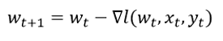

Overview
we are now ready to present Gradient Descent (GD) in more detail. GD is the most basic optimization algorithm; most ML-related optimizations rely on some variant of GD. As noted in the previous section, the gradient points in the direction of steepest descent, and thus reversed gradient points in the direction of steepest descent. To illustrate this, run the following demonstration:
One can easily observe that the arrows in this demo point exactly 'downhill' from wherever we are on the surface – this is the direction of the gradient, and this is we calculated those arrows to for this illustration.
Step size
So, if we already have an exact mathematical expression of the for direction of steepest descent from current point w_t, why didn't we calculate the expression:

In other words, why don't we simply take 'step size' coefficient of 1? The reason is that the size, rather than merely the direction, of the gradient at out current point may cause us to overshoot the target if we use this expression; it may place us at next stop may not even lead to a decrease in the loss function value.
Figure 1: step size madness
For example, the wild jumps from one end of the surface to the other we observe figure (1) are only the result of selecting a learning rate of 0.02, not even 1 as we've suggested. Let's reduce the step size dramatically and see what happens:
Figure 2: the better-tempered step size
So how should the step size be selected? So far, we've only discussed constant step size. The index on the step size coefficient suggests that there are methods that calculate the step size every iteration according to certain criteria; we will address that concept later.
One question about the previous that we are still curious about – what does the descent over the loss function looks like on the actual surface of the loss function? The perceptron loss function we presented is a rather poor choice for visual demonstration, so let's solve the same classification problem with a different loss function – linear regression*:
(*) we scaled our data points, to make for the demonstration.